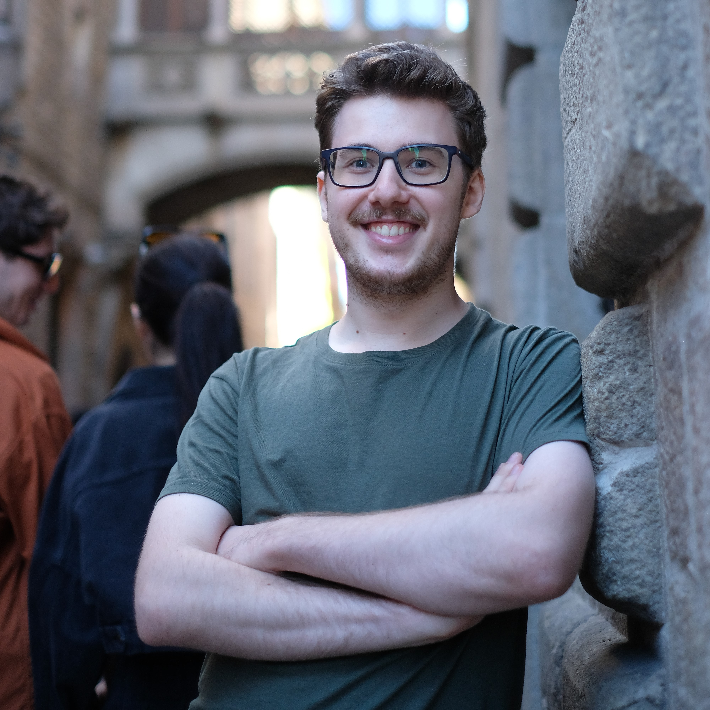

About Me
I am a software engineer with a strong research background in computer vision and computer graphics. I like building things that work well in practice, from backend and tooling code to research prototypes and graphics projects.
At Snap Inc., my research internship focuses on synthetic data generation, 3D scene understanding, and generative models. I adapt network architectures, develop new training objectives, and run large-scale data generation on Google Cloud using Vertex AI and Cloud Storage.
At Partium, I worked on microservices, CI/CD, and search infrastructure with Docker, Kubernetes, and Elasticsearch, along with computer vision and ML features. At ViewApp, I developed C++ tooling and build automation in Unreal Engine.
I am very proficient in C++ and Python. I hold a Bachelor's and Master's degree in Media Computer Science from the University of Vienna, with a strong focus on computer graphics and computer vision.
- Bachelor thesis: Hand detection and pose recognition using deep learning.
- Master thesis: Procedural planet generation, open-source project with a paper presented at GAMEON 2025.
In my spare time, I maintain open-source projects including a Vulkan game engine, and explore topics like LLMs, robotics, and NVIDIA Isaac Sim.
Open to software engineering opportunities and PhD collaborations in computer vision and graphics. Feel free to reach out!

Recent News
February 2026
My contract at Snap was extended by 3 more months, until the end of April.
January 2026
I received the University of Vienna merit scholarship (Leistungsstipendium).
October 2025
I will present my research at GAME-ON 2025 in Ghent.
September 2025
I was awarded with the UNIVIE Research Award for Students for my paper.
August 2025
I will start a new position at Snap as a Computer Vision Researcher.
My Projects
Finished Projects
- Bachelor thesis — hand detection and pose recognition with deep learning
- Master thesis — open-source procedural planet generator (GAMEON 2025) with adaptive LOD and performance-focused rendering
- Super Mario 64 ROM hack — level design and assembly scripting
- University Vulkan engine — performance-critical C++, cloud gaming, FFmpeg encoding pipeline
- GPT-2 from scratch — systems-level study of LLMs (Andrej Karpathy's course)
Education
Master of Media Computer Science
University of Vienna, Austria
Graduated: November 2025
Grade average: 1.58 (1 = excellent, 5 = insufficient)
Bachelor of Science in Computer Science
University of Vienna, Austria
Graduated: January 2023
Grade average: 2.32 (1 = excellent, 5 = insufficient)
Licenses & Certifications
- C2 Proficiency - Cambridge English (Issued Feb 2024)
- CS50's Introduction to Game Development (edX, Issued November 2022)
- AWS Cloud Practitioner (Issued July 2022)
- CS50's Introduction to Computer Science (edX, Issued February 2021)
- Unreal Engine Certification (Udemy, Issued August 2020)
Competitions
- Participant in the SimpleFlips' Slide Hack Competition (2024) (Project included in the "Projects" section).
Publications
Comparative Analysis of Procedural Planet Generators
GAMEON 2025 · October 2025
Paper accepted and presented at the GAMEON 2025 conference.
Awards
Leistungsstipendium
University of Vienna · January 13, 2026
Received the Leistungsstipendium (Merit Scholarship) from the University of Vienna for outstanding academic performance.
UNIVIE Research Award for Students
University of Vienna · September 19, 2025
Received the UNIVIE Research Award for Students for outstanding research contributions.
Work Experience
Computer Vision Researcher
Snap Inc. · Full-time
Aug 2025 - Apr 2026
Built and operated large-scale synthetic data pipelines on Google Cloud (Vertex AI, Cloud Storage), generating and storing terabytes of data across distributed jobs on multiple machines.
Research on 3D scene understanding and generative models: adapting network architectures, developing novel loss objectives, and extending methods for new applications in synthetic data and scene understanding.
Worked with Python, ML frameworks, VLMs, agentic AI, 3D computer graphics tools, and on-demand cloud computing platforms.
Active collaborator: presented research analyses to the team, participated in reading groups, and supported cross-team efforts.
Multimedia-Software Engineer
ViewApp GmbH · Full-time
Jan 2025 - Jul 2025 · 7 months
Wien, Österreich · On-site
Designed and developed C++ tools in Unreal Engine to streamline artists' workflows and improve production efficiency.
Took full ownership of a major game tutorial feature — gameplay logic, design, bug fixes, and polish.
Resolved production bugs to improve system stability and end-user experience.
Multimedia-Software Engineer
ViewApp GmbH · Full-time
Jul 2024 - Sep 2024 · 3 months
Wien, Österreich · On-site
Designed and developed C++ tools in Unreal Engine to streamline artists' workflows.
Automated game builds with TeamCity, reducing manual effort and minimizing release errors.
Resolved production bugs to improve system stability and end-user experience.
Software Engineer
Partium · Part-time
Oct 2022 - Mar 2024 · 1 year 6 months
Vienna, Austria · Hybrid
Deployed and maintained microservices with Docker and Kubernetes in beta and production environments.
Improved CI/CD pipelines with additional automated checks and tests, increasing release reliability.
Integrated Elasticsearch into the search stack, improving query performance on large spare-parts catalogs.
Built developer tooling (custom linters) and integrated an OCR component into the product.
Trained and evaluated ML models for spare-part recognition (Python).
Software Engineer (Internship)
Partium · Full-time
Jul 2022 - Sep 2022 · 3 months
Vienna, Austria · On-site
Evaluated and integrated Elasticsearch as the search backend, achieving notable speed improvements on large datasets.
Collaborated in a cross-functional Agile team on CI/CD pipelines and testing workflows.
Resume
You can download my resume by clicking the button below:
Or preview my resume below:
Contact
You can always send me a message with the following form: